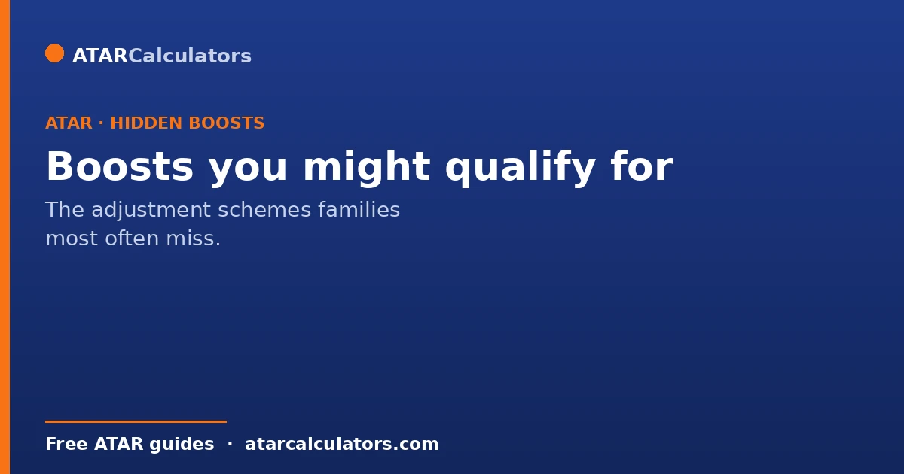
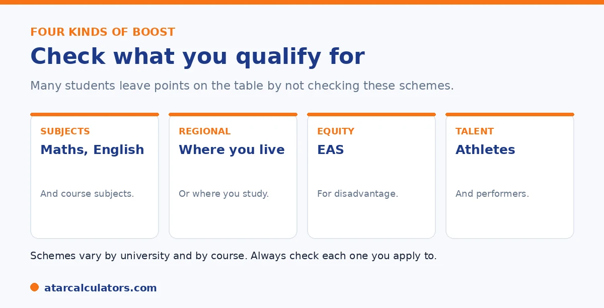

Here is the short version. There are several adjustment factor schemes that lift your selection rank, and students often miss them. The main ones are subject adjustments for strong results in certain subjects, location adjustments for regional students, the Educational Access Scheme for disadvantage, and schemes for elite athletes and performers. Some are automatic, some need an application. They vary by university. So check each one you apply to.
Adjustment factors can lift your selection rank by several points, yet many students never check what they qualify for. That can be the difference between an offer and a near miss.
Below is a checklist of the main boosts to look into. To add up the ones you qualify for, use our selection rank calculator.
Key takeaways
- Subject adjustments reward strong results in certain subjects.
- Location adjustments help regional and rural students.
- The Educational Access Scheme recognises disadvantage.
- Elite athlete and performer schemes reward talent.
- Some are automatic; others need a separate application.
- They vary by university, so check each one.
The boosts to check for
Here are the main schemes worth checking. Most students qualify for at least one, and many do not realise it.

Subject adjustments
Many universities reward strong results in certain subjects. These are often maths and English, or subjects linked to your course. They are usually added for you, so you may be getting them without knowing.
Interstate and overseas students are different. Subject points may not be added for you, so you may need to contact the university. See our guide on subject bonus points.
Location and regional adjustments
Do you live in, or go to school in, a regional area? Many universities add location points for that. They are usually automatic, based on your postcode or school.
Different universities use different rules, some based on where you live, some on your school. To check, see our guide on regional bonus points and postcodes.
Want to add up the boosts you qualify for?
Try the selection rank calculator →The Educational Access Scheme
Was your study affected by hardship in Year 11 or 12? You may qualify for the Educational Access Scheme. It covers things like money problems, illness, a hard home life, or missed schooling.
Unlike the points above, this one needs its own application, with documents. It is worth the effort if you qualify. See our EAS guide.
The Educational Access Scheme is worth singling out. This is because it is both one of the more valuable adjustments and one of the most under-claimed, precisely because it needs a deliberate application. It exists to recognise that circumstances outside your control can hold back your Year 11 and 12 results. And the range of qualifying situations is broad. They include financial hardship, and serious illness or disability affecting you or a close family member. They also cover a disrupted or unstable home environment, being a young carer, moving schools or missing significant schooling, English-language background, and more. Many students who genuinely qualify never apply, either because they assume their situation "does not count" or because they do not realise the scheme exists until offers have passed. That is a costly assumption. This is because the points can lift a selection rank across a cut-off that the raw ATAR would miss. The catch is that, unlike automatic subject bonuses, EAS needs you to lodge a separate application with supporting documentation. That is often a form plus evidence, such as a letter from a school counsellor, doctor or other authority. And it closes on a deadline well before offers. So the practical advice is simple. If anything disrupted your senior schooling, look into EAS early, gather the documents it asks for, and apply on time. It is one of the few adjustments where the effort of a proper application directly buys you a higher selection rank. Skipping it out of doubt or delay is a genuine lost opportunity.
Elite athletes and performers
Are you an elite athlete or performer? Some universities offer schemes for the demands of training or rehearsing during Year 12. Not every university does, and it usually needs its own application.
If this could be you, check each university's scheme directly. See our guide on elite athlete bonus points.
How to check what you qualify for
The golden rule is to check each university yourself. Schemes differ from one to another, and from course to course. Do not assume a scheme at one exists at another.
Start on each university's adjustment page, and your state admissions centre. A few minutes can be worth several points.
Carer, first-in-family and other schemes
Beyond the well-known adjustments, students often miss schemes for carer responsibilities, being the first in their family to attend university, or specific under-represented groups. These can add equity adjustment points that lift your selection rank.
So the range of adjustments is broader than many realise. If any of these circumstances apply to you, check whether your admissions centre or target university recognises them, since they are easy to overlook.
Working through each adjustment type
To find adjustments you might be missing, work through each type: subjects that earn points for your target courses, your postcode for regional schemes, financial hardship, illness or disability, disrupted schooling, carer duties, and first-in-family status. Check both your admissions centre and each university.
Going through this list deliberately often surfaces points students did not know they could claim. Because a few points can move a selection rank across a cutoff, this check is well worth the time.
Applying for what you find
Many of these adjustments, especially equity ones, require an application with supporting documents, often through the Educational Access Scheme, by a set deadline. So finding that you qualify is only the first step; you then have to apply and provide evidence.
So once you identify schemes you may be eligible for, note their deadlines and gather the required documents early. Missing an application can mean missing points you were entitled to. See how to apply for EAS.
Common questions
What hidden selection rank boosts might I qualify for?
The main ones are subject adjustments for strong results in certain subjects, location adjustments for regional students, the Educational Access Scheme for disadvantage, and elite athlete or performer schemes. Check each university. This is because they vary.
Am I missing bonus points I could claim?
Possibly. Many students never check, and miss adjustments they qualify for. Subject and location adjustments are often automatic, but the Educational Access Scheme and elite athlete schemes need a separate application.
Do carers or first-in-family students get adjustments?
Some universities offer schemes for circumstances like carer responsibilities or being first in the family to attend university, often through the Educational Access Scheme. Check each university, as the schemes and criteria vary.
Are these boosts automatic?
Some are. Subject and location adjustments are usually applied automatically. The Educational Access Scheme and elite athlete or performer schemes need a separate application, with supporting documents.
How do I find out what I qualify for?
Check each university's adjustment factors page and your state admissions centre. Schemes differ between universities and between courses, so check each one you plan to apply to rather than assuming.
Add up your boosts
Estimate your selection rank with the adjustments you qualify for. Free, and no signup.
Open the selection rank calculator →Related guides
This guide is general information for students and parents, not formal admissions advice. Adjustment factors, schemes, caps and course cut-offs are set by each university and can change every year. They differ from one institution to another, and from course to course within the same institution. Always confirm the current details with the specific university and your state admissions centre (UAC, VTAC, QTAC, SATAC or TISC). A useful starting point is UAC's guide to selection rank adjustments. Reviewed by the ATARCalculators Editorial Team.